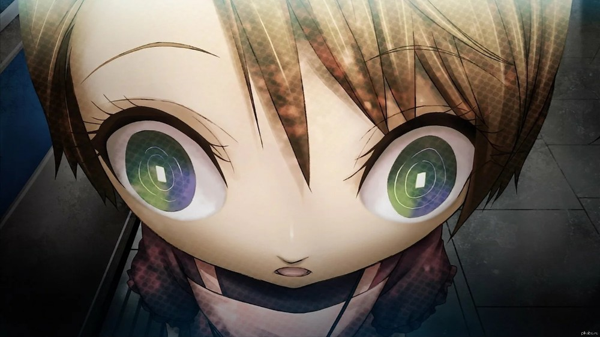

Historia de Japón
Orígenes Antiguos
Japón, conocido en japonés como Nihon o Nippon, es una nación insular con una historia que se remonta a milenios. Los primeros asentamientos humanos datan del período Paleolítico, aproximadamente 30,000 años atrás. Durante el período Jōmon (14,000–300 a.C.), se desarrolló una cultura de cazadores-recolectores, reconocida por su cerámica cordada, considerada una de las más antiguas del mundo.
Con la llegada del período Yayoi (300 a.C.–300 d.C.), el país experimentó influencias migratorias del continente asiático, introduciendo la agricultura del arroz, la metalurgia y nuevas prácticas culturales. Estos cambios sentaron las bases para el desarrollo de una sociedad más estructurada y jerárquica.

Período Feudal y Samuráis
El período feudal de Japón, que abarca desde el siglo XII hasta el XIX, estuvo dominado por señores feudales conocidos como daimyō y la clase guerrera de los samuráis. Este fue un tiempo de constantes batallas entre clanes por el control territorial y el poder político. Los samuráis seguían el bushidō, un estricto código de honor que valoraba la lealtad, el coraje y el respeto.
Figuras históricas como Oda Nobunaga, Toyotomi Hideyoshi y Tokugawa Ieyasu jugaron roles cruciales en la unificación de Japón. El shogunato Tokugawa estableció un gobierno centralizado y una paz relativa durante más de dos siglos, período conocido como Edo.
Restauración Meiji y Modernización
En 1868, la Restauración Meiji marcó un punto de inflexión en la historia japonesa. Se abolió el shogunato y se restauró el poder imperial bajo el emperador Meiji. Japón inició una rápida modernización y occidentalización en áreas como la industria, educación, ejército y gobierno. Se adoptaron tecnologías y sistemas políticos occidentales para evitar la colonización extranjera y fortalecer la nación.
Esta transformación permitió a Japón convertirse en la primera potencia asiática moderna y desempeñar un papel importante en el escenario mundial, aunque también llevó a conflictos e imperialismo regional.
Era Contemporánea
Tras su derrota en la Segunda Guerra Mundial, Japón resurgió con una constitución pacifista y apoyo económico internacional, especialmente de Estados Unidos. El país experimentó un crecimiento económico sin precedentes entre las décadas de 1950 y 1980, conocido como el "Milagro Económico Japonés". Se convirtió en líder mundial en tecnología, manufactura y finanzas.
Hoy en día, Japón es reconocido por su combinación única de tradición y modernidad, su cultura pop influyente y su compromiso con la innovación y la calidad.
Cultura y Tradiciones
Arte y Artesanía
El arte japonés es una manifestación de su profunda conexión con la naturaleza y el equilibrio. La caligrafía (shodō) es considerada una forma elevada de arte, donde cada trazo refleja la esencia del carácter del artista. La pintura sumi-e utiliza tinta negra para capturar paisajes y escenas con simplicidad y elegancia.
La cerámica japonesa, como la porcelana Arita y la cerámica de Bizen, es valorada por su artesanía y estética. El teatro tradicional, incluyendo el Noh y el Kabuki, combina música, danza y drama para contar historias de héroes, dioses y demonios.
Festivales y Celebraciones
Los japoneses celebran numerosos festivales (matsuri) a lo largo del año, muchos de ellos de origen religioso. El Hanami, en primavera, es la tradición de contemplar la belleza de los cerezos en flor (sakura), simbolizando la naturaleza efímera de la vida. Durante el verano, festivales como el Gion Matsuri en Kioto presentan desfiles con carrozas elaboradas y rituales ancestrales.
El Obon, en agosto, es una festividad que honra a los antepasados y reúne a las familias para rendir homenaje a los espíritus de los difuntos. Las ciudades se iluminan con linternas y se realizan danzas tradicionales llamadas Bon Odori.
Artes Marciales
Las artes marciales japonesas, o budō, son disciplinas que combinan técnicas de combate con desarrollo espiritual. El karate, originario de Okinawa, se enfoca en golpes y patadas precisas. El judo, creado por Jigoro Kano, es un arte que utiliza la fuerza del oponente en su contra, enfatizando lanzamientos y derribos.
El kendo, la vía de la espada, mantiene vivo el espíritu samurái a través de duelos con espadas de bambú (shinai) y armaduras protectoras (bōgu). Estas prácticas no solo entrenan el cuerpo, sino también la mente y el carácter.
Literatura y Poesía
La literatura japonesa es rica y variada, desde los clásicos como "El cuento de Genji" de Murasaki Shikibu, considerada la primera novela del mundo, hasta la poesía haiku de Matsuo Bashō, que captura la esencia de un momento en tres versos breves. Los haikus suelen evocar imágenes de la naturaleza y emociones profundas con una simplicidad asombrosa.
La literatura contemporánea cuenta con figuras como Haruki Murakami, cuyas obras exploran temas de soledad, identidad y realismo mágico, resonando con lectores a nivel global.
Lugares para Visitar
Kioto
Antigua capital imperial, Kioto es el corazón cultural de Japón. Alberga más de 1,600 templos budistas y 400 santuarios shintoístas. Destacan el Kinkaku-ji o Pabellón Dorado, recubierto de pan de oro, y el Templo Kiyomizu-dera, famoso por su terraza de madera construida sin clavos que ofrece vistas panorámicas de la ciudad.
Los barrios tradicionales como Gion conservan la atmósfera de épocas pasadas, donde es posible avistar maikos y geishas camino a sus compromisos. Los jardines zen, como el Ryoan-ji, invitan a la contemplación y la meditación.
Tokio
La capital actual es una metrópolis vibrante que fusiona lo ultramoderno con lo tradicional. Distritos como Shinjuku y Shibuya deslumbran con sus luces neón y rascacielos, mientras que Asakusa alberga el antiguo templo Senso-ji, dedicado a la diosa de la misericordia Kannon.
Akihabara es el paraíso de los entusiastas de la electrónica y la cultura otaku, repleto de tiendas de tecnología, manga y anime. Los enormes parques como el Ueno ofrecen un respiro del bullicio urbano y son lugares ideales para disfrutar del Hanami en primavera.
Hiroshima
Conocida mundialmente por el trágico bombardeo atómico de 1945, Hiroshima se ha convertido en un símbolo de paz y resiliencia. El Parque Conmemorativo de la Paz alberga el Museo de la Paz y el icónico Domo de la Bomba Atómica, recordatorios constantes de la importancia de la paz mundial.
A pocos kilómetros se encuentra la isla de Miyajima, famosa por su torii flotante del Santuario Itsukushima, considerado uno de los paisajes más bellos de Japón.
Parque Nacional de Nikko
Ubicado al norte de Tokio, Nikko es conocido por sus santuarios y templos opulentemente decorados, como el Santuario Toshogu, mausoleo del shogun Tokugawa Ieyasu. Los paisajes naturales de la región incluyen cascadas como Kegon, lagos cristalinos y senderos que se adentran en bosques centenarios.
En otoño, Nikko se transforma con el kouyou, el cambio de color de las hojas, ofreciendo vistas espectaculares de tonos rojos, dorados y naranjas.
Monte Fuji
El Monte Fuji, o Fuji-san, es el pico más alto de Japón con 3,776 metros. Este volcán activo es un símbolo nacional y lugar de peregrinación. Escalarlo durante la temporada oficial, entre julio y septiembre, es una experiencia inolvidable que culmina con la vista del amanecer desde la cima, conocido como goraikō.
Alrededor del monte se encuentran los Cinco Lagos de Fuji, áreas ideales para actividades al aire libre como senderismo, ciclismo y fotografía. La región también es famosa por sus onsens (baños termales) con vistas panorámicas.
Gastronomía Japonesa
Sushi y Sashimi
Íconos de la cocina japonesa, el sushi y el sashimi destacan por su frescura y presentación artística. El sushi combina pescado o mariscos con arroz avinagrado, a veces envuelto en alga nori. Variantes como el nigiri, maki y temaki ofrecen diversidad en sabores y texturas. El sashimi, por su parte, es pescado crudo cortado en finas láminas, apreciado por su pureza y calidad.
Ramen
Plato reconfortante por excelencia, el ramen es una sopa de fideos servida en caldo, que puede ser de soya, miso, sal o tonkotsu (huesos de cerdo). Cada región tiene su estilo característico, y los toppings suelen incluir chashu (cerdo asado), menma, naruto (pasta de pescado) y huevo marinado.
Tempura
Introducida en el siglo XVI por misioneros portugueses, la tempura se ha convertido en un plato esencial. Consiste en mariscos y vegetales ligeramente rebozados y fritos, logrando una textura crujiente pero aireada. Se sirve generalmente con una salsa tentsuyu elaborada con dashi, mirin y salsa de soya.
Okonomiyaki
Conocido como la "pizza japonesa", el okonomiyaki es una torta salada a base de harina, huevo y repollo, a la que se agregan ingredientes al gusto como carne, mariscos y vegetales. Se cocina en una plancha teppan y se cubre con salsa especial, mayonesa japonesa, alga nori en polvo y katsuobushi (copos de bonito seco).
Wagashi
Los wagashi son dulces tradicionales que acompañan la ceremonia del té. Elaborados con ingredientes naturales como pasta de frijol rojo (anko), arroz mochi y frutas, su diseño y colores reflejan las estaciones y tienen un significado estético y simbólico. Ejemplos populares son el daifuku, dorayaki y taiyaki.
Datos Curiosos
Puntualidad Extrema
Los trenes japoneses son famosos por su precisión. En 2017, una empresa ferroviaria se disculpó públicamente porque uno de sus trenes partió 20 segundos antes de lo programado. Esta dedicación a la puntualidad refleja el respeto por el tiempo de los demás y la eficiencia en el servicio.
Islas y Volcanes
Japón está compuesto por más de 6,800 islas, siendo las cuatro principales Honshu, Hokkaido, Kyushu y Shikoku. Su ubicación en el Anillo de Fuego del Pacífico hace que tenga más de 100 volcanes activos, lo que también contribuye a sus numerosas aguas termales naturales.
Baños Públicos Temáticos
Los onsen, o baños termales, son una parte esencial de la cultura japonesa. Muchos de ellos están al aire libre, rodeados de naturaleza, y se cree que las aguas tienen propiedades curativas. Existen onsen temáticos, como aquellos con vino tinto, café o té verde, ofreciendo experiencias únicas y relajantes.
Mascotas Robóticas
Japón está a la vanguardia en robótica y tecnología. Aibo, el perro robot de Sony, es un ejemplo de cómo la robótica se integra en la vida cotidiana. Estas mascotas ofrecen compañía, responden a comandos y pueden aprender comportamientos, reflejando el interés japonés por la innovación y la vida asistida por tecnología.
Máquinas Expendedoras para Todo
Con más de 5 millones de máquinas expendedoras distribuidas por todo el país, es posible comprar casi cualquier cosa en ellas: desde bebidas y snacks hasta huevos frescos, paraguas y ropa interior. Estas máquinas reflejan la cultura de conveniencia y confianza en la sociedad japonesa.